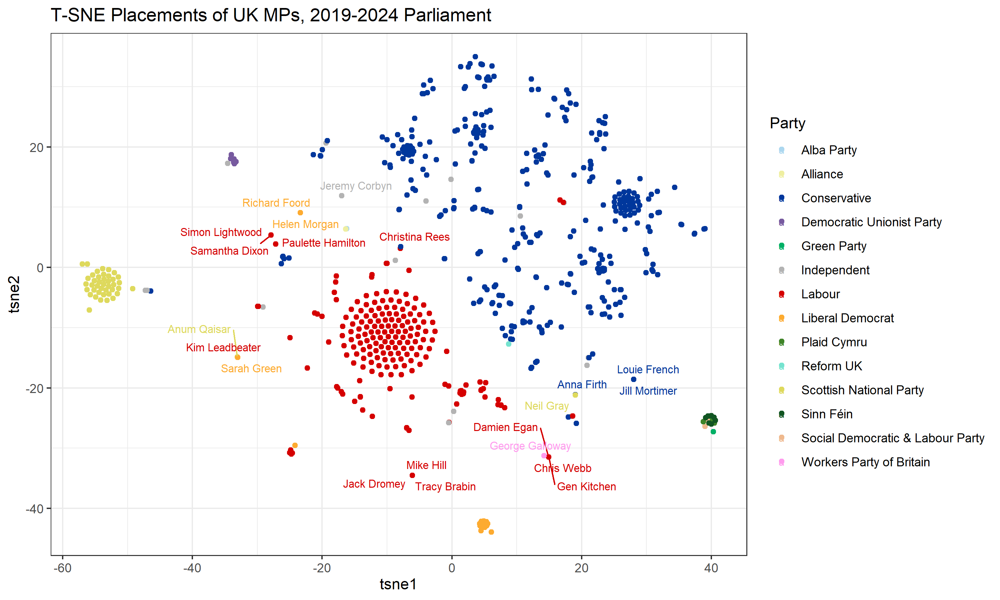

Catherine Moez
Introduction
Currently a postdoctoral research fellow at the Centre for the Politics of Feelings at Royal Holloway, University of London. (2024-2025).
Previously: PhD, Political Science, at the University of Toronto. (2024).
New, January 2025: Irish language text resources
For those working with Irish (Gaelic) text, I have posted a wordlist of over 20,000 word types to facilitate using (and/or removing) Irish text in your documents. The list and descriptions are on my Github at Irish Language Resources. There is a Google Translate English translation of each word as well, and corpus counts from the Irish Dáil.
November 2024: My PhD dissertation
My PhD dissertation is now available on the University of Toronto's TSpace repository.
November 2024: Additional UK parliamentary data available

Voting records for the 2019-2024 Parliament are not available in full via The Public Whip (The Public Whip data link), which has all other sessions since 1997. I have manually assembled all the divisions from the 2019-2024 House of Commons from the UK Parliament website. Please contact me if you would like to use this data, with credit.
New, November 2024: Generic Embedding Lexicons
Arxiv preprint: Generic Embedding-Based Lexicons for Transparent and Reproducible Text Scoring. Data to be released hereon my Github shortly; please contact me at catherine.moez [at] rhul.ac.uk or catherine.moez [at] mail.utoronto.ca if you would like early access.
Github companion blog
See recent blog posts on coding, text analysis, and computational tools here.
Recent conference papers
Moez, Catherine, and Manos Tsakiris. 2024. "‘All the Same’? Assessing the Politically Disaffected’s Responses to Political Persuasion." Poster presentation, Toronto--Montreal Political Behaviour Workshop. Montreal, Canada. September 27-28, 2024. Request for paper or poster.
Moez, Catherine, and Randy Besco. 2024. "Who Raises Immigration on the Political Agenda? Evidence from Canadian News Media and Parliamentary Debates, 1988-2023." Canadian Political Science Association (CPSA) annual meeting. Montreal, Canada, June 12-14, 2024. Please request for the paper.
Moez, Catherine. 2023. "Audio data in populist political speakers' use of emotion." American Political Science Association (APSA) annual conference. Los Angeles, USA. September 2, 2023.
Moez, Catherine. 2023. "Free-Market Populism on the Canadian Right: A Quantitative Discourse Analysis of the Reform Party of Canada." Canadian Political Science Association (CPSA) annual conference. Toronto, Canada. May 30, 2023.
Custom dictionaries
See more text analysis resources (e.g., translations of existing lexicons) at my Github.
Original elections datasets and parliamentary data
Australia: Australian MPs' party affiliations 2006-2024. Sourced from OpenAustralia.org for currently serving MPs and Wikipedia scraping (former MPs). March 28, 2024. I also have lists of 'soft' vs 'hard' left Labor MPs I am developing -- please contact if interested.
Europe: Exact election dates, European elections 2000-mid 2023 (IDEA database + webscraping).
Canada: Conservative MPs' party affiliations 1980-2022; all MPs' party affiliations 1920-2019 (via LIPAD) and party affiliations 1994-2022 (via OpenParliament.ca) Converted from SQL to CSV for those who don't have SQL access.